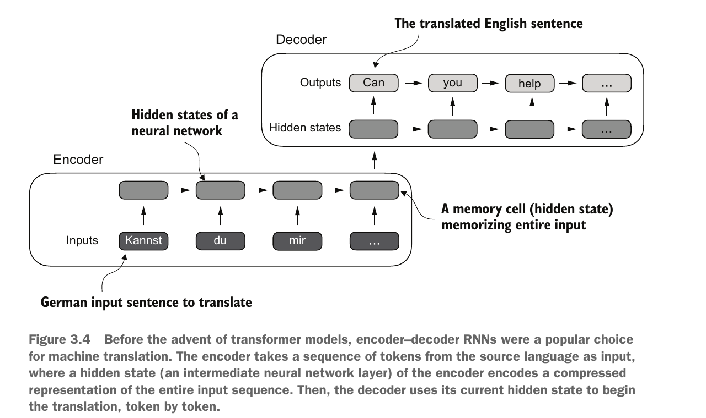
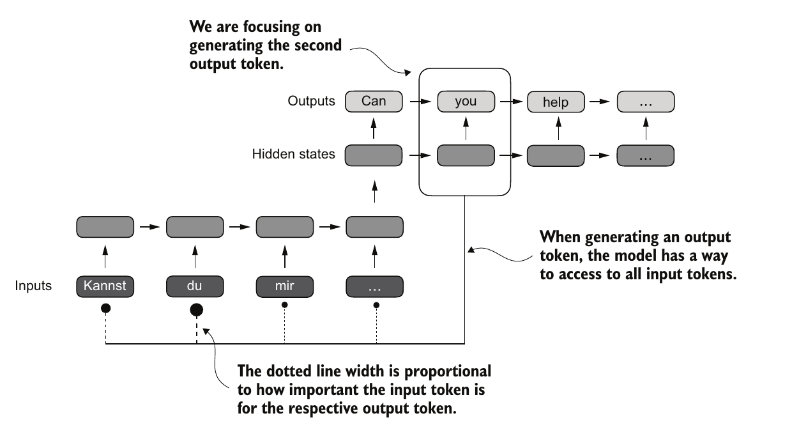
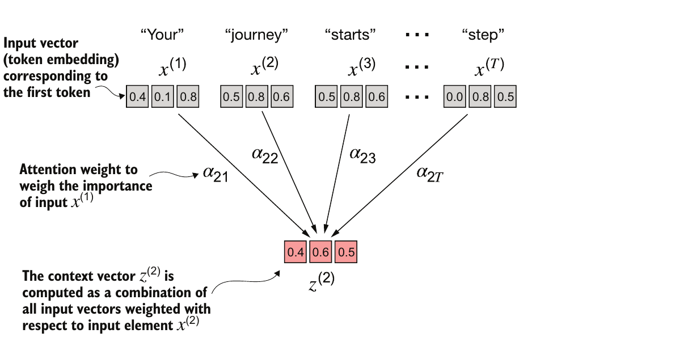
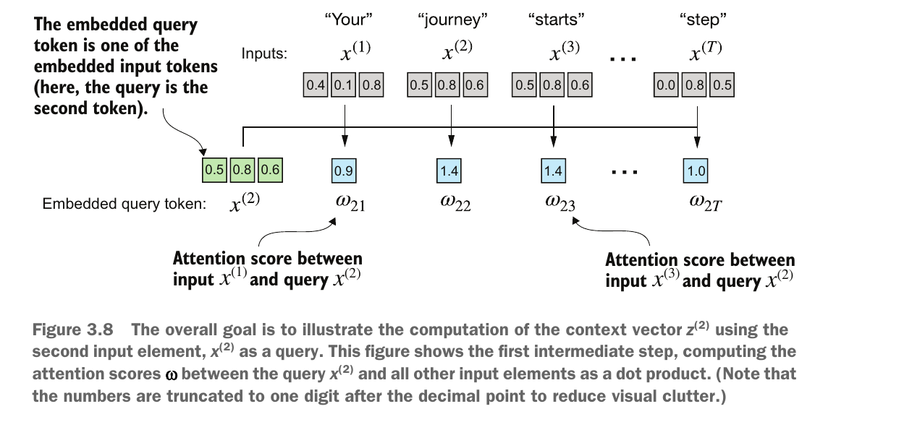
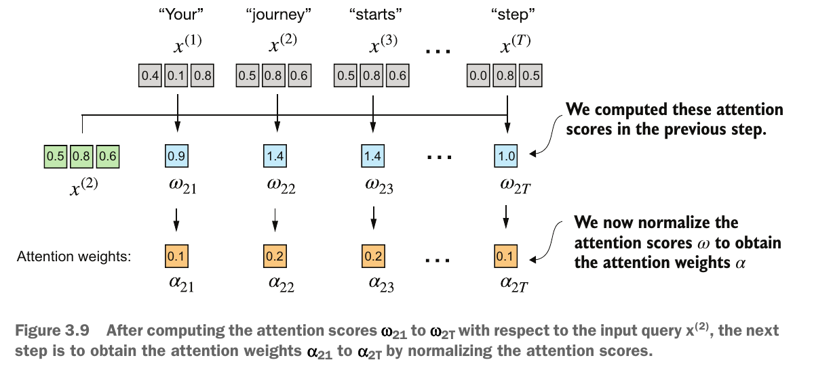
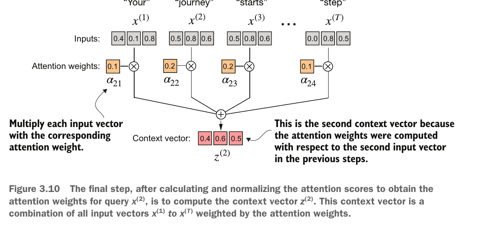
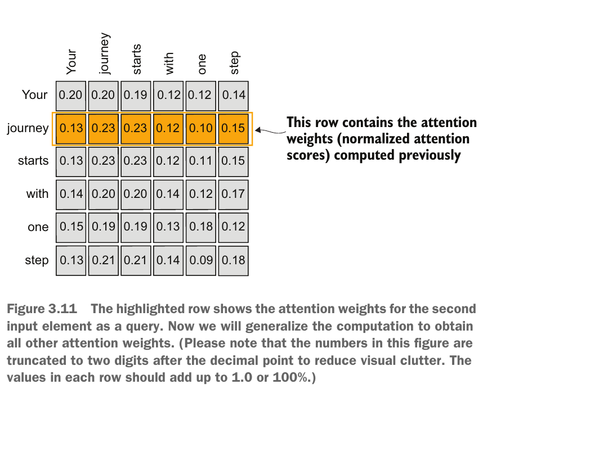
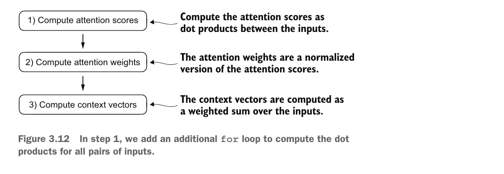

입력과 전달물
- 입력은 여섯 토큰의 3차원 예시 벡터다. 토큰은 여기서 단어 하나에 대응한다.
- 각 토큰에 문맥 정보를 섞은 벡터를 만들고
attention_report.py로 동료에게 계산·검산 결과를 전달한다.
GENERATIVE AI · SELF-ATTENTION
Self-Attention의 계산 원리: 같은 문장의 벡터를 비교하고, 기여 비율로 섞은 결과를 검산한다.
attention_report.py로 동료에게 계산·검산 결과를 전달한다.02

03
you가 여러 입력과 연결되고 연결 강도가 서로 다른지 확인한다.
04

05
attention_report.py의 첫 부분이다. import torch는 PyTorch 계산 도구를 불러온다.torch.tensor는 6행 3열 실수 배열을 만든다. 행은 Your … step 순서, 열은 특징 좌표다.shape는 축 길이, dtype은 수의 저장 형식이다. float32는 32비트 실수다.import torch
inputs = torch.tensor([
[0.43, 0.15, 0.89], # Your
[0.55, 0.87, 0.66], # journey
[0.57, 0.85, 0.64], # starts
[0.22, 0.58, 0.33], # with
[0.77, 0.25, 0.10], # one
[0.05, 0.80, 0.55], # step
])
print(inputs.shape, inputs.dtype)torch.Size([6, 3]) torch.float3206
0.43×0.55 + 0.15×0.87 + 0.89×0.66 = 0.9544.[3] 두 개를 합산해 스칼라(수 하나)를 얻는다. 점수는 아직 기여 비율이 아니다.07
inputs[1]은 0부터 세어 두 번째 행을 query로 고른다. inputs @ query는 여섯 내적을 계산한다.query = inputs[1]
attn_scores_2 = inputs @ query
print(attn_scores_2)tensor([0.9544, 1.4950, 1.4754, 0.8434, 0.7070, 1.0865])
08
torch.softmax를 사용한다.09
dim=0은 이 1차원 벡터 전체를 계산 대상으로 삼는다.sum()은 모든 비율의 합이다. allclose는 두 값이 허용 오차 안에서 같은지 판정한다.atol=1e-6은 절대 오차 백만분의 1, rtol=0은 추가 상대 오차 없음이다. 계산에는 반올림 전 값을 사용한다.attn_weights_2 = torch.softmax(attn_scores_2, dim=0)
print(attn_weights_2)
print(torch.allclose(attn_weights_2.sum(),
torch.tensor(1.), atol=1e-6, rtol=0))tensor([0.1385, 0.2379, 0.2333, 0.1240, 0.1082, 0.1581])
True
10
[6] @ [6,3]은 여섯 입력을 합쳐 세 특징을 남긴다. 비율의 위치와 입력 행의 짝을 유지해야 한다.context_vec_2 = attn_weights_2 @ inputs
print(context_vec_2)tensor([0.4419, 0.6515, 0.5683])
11
[:,None]은 여섯 비율 [6]을 [6,1]로 바꾼다. 콜론은 모든 행, None은 길이 1인 축 추가이다.* inputs는 비율 하나를 같은 행의 세 좌표에 적용한다. 결과 [6,3]의 각 행은 입력 하나의 기여다.sum(dim=0)은 기여 행 여섯 개를 합친다. @와 같은 context를 얻는다. 첫 좌표의 기여 약 [0.0596,0.1308,0.1330,0.0273,0.0833,0.0079]를 더하면 0.4419다.contributions = attn_weights_2[:, None] * inputs
print(contributions.shape)
print(contributions.sum(dim=0))
print(torch.allclose(contributions.sum(dim=0),
context_vec_2, atol=1e-6, rtol=0))torch.Size([6, 3])
tensor([0.4419, 0.6515, 0.5683])
True12

13
inputs.T는 [6,3]을 [3,6]으로 전치한다. inputs @ inputs.T는 토큰 쌍 36개의 내적을 [6,6]에 모은다.attn_scores = inputs @ inputs.T
print(attn_scores.shape)
print(torch.allclose(attn_scores, attn_scores.T,
atol=1e-6, rtol=0))torch.Size([6, 6])
True
14
dim=-1은 마지막 축, 즉 열을 따라 각 행을 따로 정규화한다. 기준 토큰 하나가 여섯 입력에 나눠 줄 비율이다.sum(dim=-1)은 각 행을 더해 길이 6의 벡터를 만든다. ones(6)은 1 여섯 개를 만들어 비교 기준으로 쓴다.attn_weights = torch.softmax(attn_scores, dim=-1)
print(attn_weights.sum(dim=-1))
print(torch.allclose(attn_weights.sum(dim=-1),
torch.ones(6), atol=1e-6, rtol=0))tensor([1.0000, 1.0000, 1.0000, 1.0000, 1.0000, 1.0000])
True15
dim=0을 2차원 score에 쓰면 열마다 합이 1이 된다. shape은 맞아도 목표가 다르다.dim=-1로 바꾸면 행마다 정규화된다. False는 이 입력에서 행 합 조건이 실패했다는 뜻이다.wrong = torch.softmax(attn_scores, dim=0)
print(torch.allclose(wrong.sum(dim=-1),
torch.ones(6), atol=1e-6, rtol=0))
print(torch.allclose(attn_weights.sum(dim=-1),
torch.ones(6), atol=1e-6, rtol=0))False
True16
print(attn_scores[1, 2], attn_scores[2, 1])
print(attn_weights[1, 2], attn_weights[2, 1])tensor(1.4754) tensor(1.4754)
tensor(0.2333) tensor(0.2369)17
[6, 6] @ [6, 3]은 각 query 행의 weight로 여섯 입력을 가중합한다.context_vec_2와 같아야 한다.allclose가 True이면 단일 계산을 전체 행렬로 일반화한 과정이 보존됐다.all_context_vecs = attn_weights @ inputs
print(all_context_vecs.shape)
print(all_context_vecs[1])
print(torch.allclose(all_context_vecs[1], context_vec_2,
atol=1e-6, rtol=0))torch.Size([6, 3])
tensor([0.4419, 0.6515, 0.5683])
True18
X:[6,3] → S:[6,6] → A:[6,6] → Z:[6,3]이며 두 번째 출력은 [0.4419,0.6515,0.5683]이다.19
attention_report.py에 여섯 입력을 고정하고 score, weight, context를 순서대로 계산한다.python attention_report.py는 현재 폴더의 소스를 읽어 실행하고 결과를 터미널에 표시한다.20